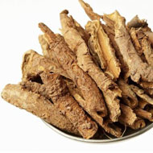

Grüner Tee
Unter den Studien zur Wirkung des grünen Tees auf die Gewichtsabnahme waren die folgenden aktuellen Studien aus Japan:
- Studie Nr. 1 - Verzehr von grünem Tee führt zu einer Verringerung von Körperfett und Malondialdehyd – modifiziertes LDL – bei Männern. In der Studie wurden 38 gesunde japanische Männer in zwei Gruppen unterteilt, welche dieselbe Ernährung erhielten. Eine Gruppe konsumierte täglich eine Flasche Tee, die 690 mg Catechin-Antioxidantien enthielt. Nach 12 Wochen waren Körpergewicht, BMI, Taillenumfang, Körperfettmasse und Unterhautfettbereich in der Gruppe mit Extrakt aus grünem Tee wesentlich niedriger als in der Kontrollgruppe. [5]
- Studie Nr. 2 - Ein –catechinreicher Extrakt aus grünem Tee reduziert Körperfett und kardiovaskuläre Risiken beim Menschen. In der Studie wurden japanische Männer und Frauen mit Fettleibigkeit für die Studie rekrutiert. Nach einer zweiwöchigen Eingewöhnungsphase wurde eine 12-wöchige Doppelblindstudie durchgeführt, in der Versuchspersonen grünen Tee mit 583 mg Catechin (Catechin-Gruppe) oder 96 mg Catechin (Kontrollgruppe) pro Tag zu sich nahmen. Es zeigte sich, dass Verringerung in Körpergeweicht, Body Mass Index, Körper/Fett-Ratio, Körperfettmasse, Taillenumfang, Hüftumfang, Bauchfettbereich und Unterhautfettbereich in der Catechin-Gruppe höher war als in der Kontrollgruppe. [6]
- Studie Nr. 3 - In einer kleinen Studie mit 10 gesunden jungen Männern zeigte sich, dass grüner Tee Extrakt eine 4%-Erhöhung in Wärmebildung verursachte sowie eine Erhöhung des Gesamtenergieverbrauchs von 4,5%. [7]
Guaraná
Damiana
Mate
In Kombination haben Guaraná, Damiana und Mate einige unglaubliche Vorteile beim Abnehmen, wie diese Studien beweisen:
- In einer 2001 von Dr. Torben Andersen im Charlottenlund Medical Centre in Dänemark durchgeführten Studie benutzten 47 gesunde, übergewichtige Patienten 45 Tage lang eine pflanzliche Mischung aus Guaraná, Mate und Damiana. Sie verloren durchschnittlich 5 Kilogramm. Der Unterschied war im Vergleich zur Placebo-Gruppe, die durchschnittlich nur ein knappes Pfund abnahm, signifikant. Es ist auch bemerkenswert, dass die pflanzliche Mischung die Magenentleerung um 20 Minuten verzögerte, wodurch ein längeres Sättigungsgefühl nach den Mahlzeiten entsteht. [9]
Resveratrol
Zu den Studien über Resveratrol gehören:
- In einer Studie wurde gezeigt, dass Resveratrol das SIRT1-Gen anregt, von dem man glaubt, dass es bei der Fettverbrennung hilfreich ist. Man glaubt, dass SIRT1 die Bildung von unreifen Fettzellen anhält, welche zu gefährlichem Bauchfett werden. [12]
- Es wurde gezeigt, dass Resveratrol die Bildung von Babyfettzellen anhält und so ein wirksames Werkzeug für die Millionen von Menschen bietet, die nach einer natürlichen Hilfe beim Abnehmen suchen. In einer Studie von 2006 entdeckten Forscher, dass überfütterte Mäuse nicht mehr zunahmen, wenn man ihnen Resveratrol gab. Die Mäuse wurden auch fitter, gesünder und hatten einen verlangsamten Alterungsprozess. [13]
Sibirischer Ginseng
Zu den Studien über sibirischen Ginseng gehören:
- Eine im Phytotherapy Research Journal veröffentlichte Studie zeigte, dass Ginseng die Differenzierung in den Zellen, welche Energie als Fett speichern, wirksam hemmt, wodurch die Fähigkeit der Zellen, den Fettspeicherprozess abzuschließen, verringert wird. [14]
Granatapfel-Extrakt
Zu den Studien über Granatapfel gehören:
- Eine von der University of Edinburgh durchgeführte und in der Daily Mail berichtete Studie fand, dass Granatapfelverzehr über einen Zeitraum von 30 Tagen das Risiko, Fettzellen im Bauchbereich zu entwickeln, wesentlich senkt. [15]

[5] - http://www.ncbi.nlm.nih.gov/pubmed/15640470?dopt=Abstract
[6] - http://www.ncbi.nlm.nih.gov/pubmed/17557985
[7] - http://www.webmd.com/diet/news/19991128/green-tea-boosts-metabolism-protects-against-diseases
[9] - http://www.ncbi.nlm.nih.gov/pubmed/11424516
[12] - http://www.articlesbase.com/nutrition-articles/the-red-wine-and-body-fat-burn-3140403.html
[13] - http://www.naturalnews.com/029797_resveratrol_heart_damage.html
[14] - http://www.naturalnews.com/024975_ginseng_diabetes_research.html#ixzz1FeyvPU4Y
[15] - http://technorati.com/lifestyle/article/pomegranate-and-natural-nutrients-can-help/